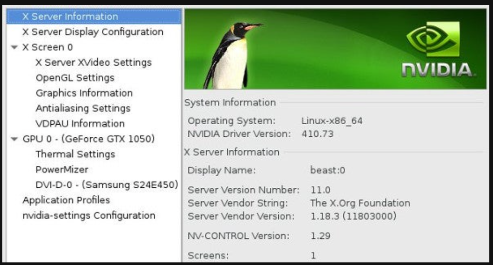
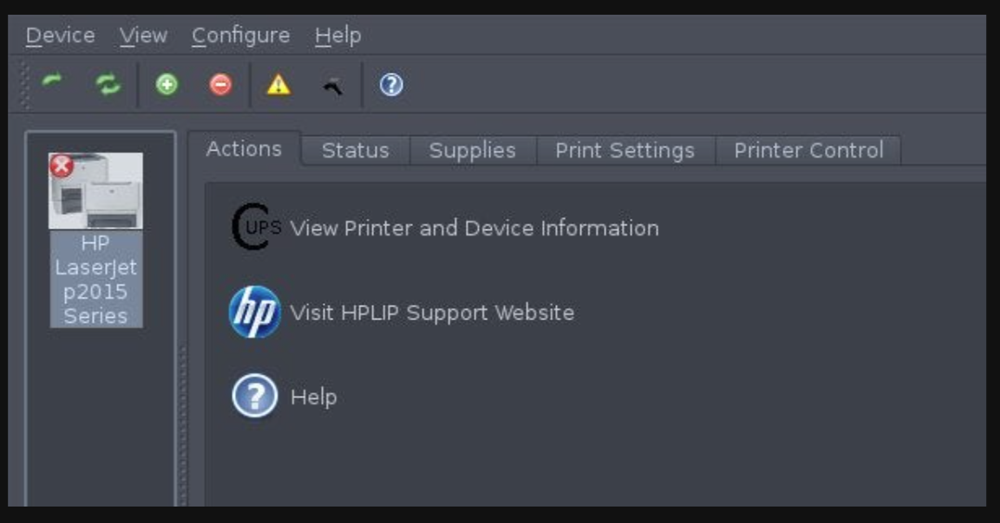

Linux_如何现代的编译和安装内核
如何现代的编译和安装内核
前言：本文是在阅读书目时找到了一篇非常高质量的文章。的原文是英文，现在我自己手头翻译了一下，发布到这里。
原文连接：How to compile a Linux kernel in the 21st century | Opensource.com
目录
编译(Compiling)或给kernel打补丁(Patching)或给kernel打补丁(Patching))
如何现代的编译和安装内核
在计算机领域，内核是处理与硬件通信和一般系统协调的底层软件。除了计算机主板上内置的一些初始固件外，当你启动计算机时，内核向上提供一种抽象，让应用层软件知道计算机有硬盘、屏幕、键盘和网卡。内核的工作还包括确保每个组件都有相同的运行时间（或多或少），以便图形、音频、文件系统和网络都能顺利运行，它们可以是同时运行的。
不过，对硬件支持的追求是持续性的，因为发布的硬件越多，内核就必须在代码中采用越多的东西，才能使硬件按预期运行。虽然很难获得准确的数字，但 Linux 内核在硬件兼容性方面肯定是名列前茅的。Linux 操作着无数的电脑和手机、业余爱好者和工业用途的嵌入式系统芯片（SoC）板、RAID 卡等等。
在 20 世纪（甚至 21 世纪初），Linux 用户在购买新硬件时，需要下载最新的内核源代码、编译并安装，以便获得设备支持。但最近，你很难找到一个自己编译内核的 Linux 用户，除非是为了好玩或通过高度专业化的定制硬件获利。现在，一般不需要自己编译 Linux 内核了。
以下是编译内核的原因，以及如何在需要时编译内核的快速教程。
更新内核的现代方法
无论你是买了一台全新的笔记本电脑，配备了炫目的新显卡或 WiFi 芯片组，还是刚把一台新打印机带回家，你的操作系统（称为 GNU+Linux 或简称 Linux，也是内核的名称）都需要一个驱动程序来打开与新组件（显卡、WiFi 芯片、打印机或其他）的通信通道。有时，当你插入一个新设备时，你的电脑似乎承认了它，这可能具有欺骗性。但千万别被骗了。有时这就是你所需要的，但有时你的操作系统只是使用通用协议来探测已连接的设备。
例如，你的电脑可能能够识别你的新网络打印机，但有时这只是因为打印机中的网卡被编程为识别自己的网络，以便获得 DHCP 地址。这并不一定意味着你的电脑知道向打印机发送什么指令才能打印出一页文本。事实上，你可能会说，计算机甚至并不真正 “知道 “该设备是一台打印机；它可能只是显示网络上有一台设备在一个特定的地址上，而该设备用一系列字符p-r-i-n-t-e-r来标识自己。人类的语言习惯对计算机来说毫无意义，它需要的是一个驱动程序。
内核开发人员、硬件制造商、技术支持人员和业余爱好者都知道，新硬件在不断推出。他们中的许多人都会直接向内核开发团队提交驱动程序，以便将其纳入 Linux。例如，Nvidia 显卡驱动程序通常被写入Nouveau内核模块，而且，由于 Nvidia 显卡很常见，这些代码通常会被包含在任何发布的通用内核中（如下载Fedora 或Ubuntu时获得的内核）。在 Nvidia 不常用的地方，例如嵌入式系统中，Nouveau 模块通常被排除在外。许多其他设备也有类似的模块：打印机有 Foomatic 和 CUPS 模块，无线网卡有 b43, ath9k, wl 模块，等等。
发行版倾向于在其 Linux 内核构建中尽可能多地包含这些模块，因为它们希望你能够连接设备并立即开始使用，而无需安装驱动程序。这在大多数情况下都会发生，尤其是现在许多设备供应商都在为他们销售的硬件提供 Linux 驱动程序开发资金，并将这些驱动程序直接提交给内核团队进行发布。
但有时，你运行的是六个月前安装的内核，而一周前刚上市的新设备令人兴奋。在这种情况下，你的内核可能没有该设备的驱动程序。好在很多时候，最近版本的内核中可能就有该设备的驱动程序，这意味着你只需更新正在运行的内核即可。
一般来说，这可以通过软件包管理器完成。例如，在 RHEL、CentOS 和 Fedora 上：
sudo dnf update kernel对于Debian和 Ubuntu 上，首先需要查看的是系统内核的版本：
$ uname -r
6.5.0-41-generic下一步就是查找更新的源：
$ sudo apt update
$ sudo apt search linux-image我们看看结果如何
linux-image-5.15.0-76-lowlatency/jammy-updates,jammy-security 5.15.0-76.83 amd64
linux-image-6.8.0-1008-azure/jammy-updates,jammy-security 6.8.0-1008.8~22.04.1 amd64
linux-image-6.8.0-1008-azure-fde/jammy-updates,jammy-security 6.8.0-1008.8~22.04.1 amd64
linux-image-6.8.0-1008-nvidia/jammy-updates,jammy-security 6.8.0-1008.8~22.04.1 amd64
linux-image-azure-edge/jammy-updates,jammy-security 6.8.0-1008.8~22.04.1 amd64
linux-image-azure-fde-edge/jammy-updates,jammy-security 6.8.0-1008.8~22.04.1 amd64
linux-image-nvidia-6.8/jammy-updates,jammy-security 6.8.0-1008.8~22.04.1 amd64
linux-image-nvidia-hwe-22.04-wip/jammy-updates,jammy-security 6.8.0-1008.8~22.04.1 amd64
linux-image-uc-6.8.0-1008-nvidia/jammy-updates,jammy-security 6.8.0-1008.8~22.04.1 amd64
linux-image-unsigned-5.15.0-76-lowlatency/jammy-updates,jammy-security 5.15.0-76.83 amd64
linux-image-unsigned-6.8.0-1008-azure/jammy-updates,jammy-security 6.8.0-1008.8~22.04.1 amd64
Linux kernel image for version 6.8.0 on 64 bit x86 SMP
linux-image-unsigned-6.8.0-1008-nvidia/jammy-updates,jammy-security 6.8.0-1008.8~22.04.1 amd64
Linux kernel image for version 6.8.0 on 64 bit x86 SMP我们可以找最新的6.8的内核
sudo apt install linux-image-6.8.0下载完成，下一步就是简单的重启就行。
安装内核模块
有时，发行版并不希望用户经常使用某个设备（或者至少不希望设备驱动程序出现在 Linux 内核中）。Linux 采用模块化方式处理驱动程序，因此发行版可以提供单独的驱动程序包，即使驱动程序没有编译到内核中，内核也可以加载这些驱动程序包。这很有用，不过当内核中不包含驱动程序，但在启动过程中需要使用，或者内核从模块化驱动程序下更新时，情况就会变得复杂。第一个问题由 initrd（初始 RAM 磁盘）解决，不在本文讨论范围之内，第二个问题由名为 kmod 的系统解决。
下面，我们一个 Nvidia 驱动程序作为例子：
kmod 系统能确保内核更新时，同时安装的所有模块化驱动程序也得到更新。如果你手动安装驱动程序，就会错过 kmod 提供的自动化功能，因此只要有 kmod 软件包，你就应该选择安装。例如，虽然 Nvidia 驱动程序作为 Nouveau 驱动程序内置于内核中，但 Nvidia 官方驱动程序仅由 Nvidia 发布。你可以通过访问网站、下载 .run 文件并运行其提供的 shell 脚本来手动安装 Nvidia 品牌的驱动程序，但在安装新内核后，你必须重复同样的过程，因为没有任何信息会告诉你的软件包管理器你手动安装了内核驱动程序。由于显卡由 Nvidia 驱动，手动更新 Nvidia 驱动程序通常意味着你必须在终端上执行更新，因为没有正常运行的显卡驱动程序就没有显卡。

当然，我们如果下载的是Nvidia的模块驱动，我们可以直接以挂载module的方式，在更新系统的时候把驱动更新了。
Fedora系列的：
$ sudo dnf install kmod-nvidia在Debian系列的
sudo apt update
$ sudo apt install nvidia-kernel-common nvidia-kernel-dkms nvidia-glx nvidia-xconfig nvidia-settings nvidia-vdpau-driver vdpau-va-driver当然这仅仅只是一个例子，但是如果你正在下载英伟达显卡驱动，你必须将Nouveau的驱动拉入黑名单。更加具体的需要查看你的发行版的文档，以获取最佳的安装步骤。
下载，并且安装一个驱动
并非所有东西都包含在内核中，也并非所有其他东西都可以作为内核模块使用。在某些情况下，你必须下载由硬件供应商编写和捆绑的特殊驱动程序，而在其他情况下，你有驱动程序却没有配置驱动程序选项的前端。
惠普打印机和 Wacom 绘图板就是两个常见的例子。如果你买的是惠普打印机，那么你可能拥有可以与打印机通信的通用驱动程序。你甚至可以打印。但通用驱动程序可能无法提供针对你的型号的专门选项，如双面打印、拼版、纸盘选择等。HPLIP（HP Linux 成像和打印系统）提供了管理作业、调整打印选项、选择适用纸盘等选项。
HPLIP 通常捆绑在软件包管理器中；只需搜索 “hplip “即可。

同样，Wacom 平板电脑（数字艺术家的主要插画平板电脑）的驱动程序通常包含在内核中，但微调设置的选项（如压力灵敏度和按钮功能）只能通过 GNOME 默认包含的图形控制面板访问，但在 KDE 中可作为额外软件包 kde-config-tablet 安装。
可能还有一些相对罕见的情况——内核中没有驱动程序，但以 RPM 或 DEB 文件的形式提供 kmod 版本的驱动模块，你可以通过软件包管理器下载并安装。
编译(Compiling)或给kernel打补丁(Patching)
即使在未来乌托邦的 21 世纪，也有一些厂商对开放源代码的理解不够深刻，无法提供可安装的驱动程序。有时，这些公司会提供驱动程序的源代码，但希望你下载代码、修补内核、编译并手动安装。
这种发布模式与在 kmod 系统外安装打包驱动程序有同样的缺点：内核更新会破坏驱动程序，因为每次更换新内核时，都必须手动将其重新集成到内核中。
令人欣慰的是，这种情况已经很少见了，因为 Linux 内核团队已经做得很好，他们大声恳求公司与他们沟通，而且公司也终于接受了开源不会很快消失的事实。但仍有一些新奇或超专业的设备只提供内核补丁。
官方对如何编译内核有特定的发行版偏好，以便让软件包管理器参与升级系统中如此重要的部分。软件包管理器种类繁多，无法一一列举；举例来说，以下是 Fedora 上的 rpmdev 或 Debian 上的 build-essential 和 devscripts 等工具的幕后工作。
一般的步骤如下：
uname -r在大多数情况下，如果您还没有升级内核，那么升级内核是安全的。毕竟，你的问题有可能在最新版本中得到解决。如果你尝试了，但没有成功，那么你应该下载你正在运行的内核的源代码。大多数发行版都为此提供了专门的命令，但要手动下载，你可以在 kernel.org 上找到源代码。
您还必须下载内核所需的补丁。有时，这些补丁与内核版本有关，因此要谨慎选择。
将源代码和补丁文件放在 /usr/src/linux 中是一种传统做法，至少在人们经常编译自己的内核时是这样。
根据需要解压缩内核源代码和补丁文件：
$ cd /usr/src/linux
$ bzip2 --decompress linux-5.2.4.tar.bz2
$ cd linux-5.2.4
$ bzip2 -d ../patch*bz2这里的补丁文件可能会有若干指引步骤来指导你如何来给内核。打补丁，但是通常的他们会被设计。在你的代码层次数上的顶层开始执行。
$ patch -p1 < patch*example.patch一旦你的内核代码被打上了补丁，你可以尝试用你电脑的旧的配置文件来准备对内核配置进行补丁。
$ make oldconfigmake oldconfig指令完成两个重要的目的，它继承了你当前内核的配置，以及它允许你去配置新的选项，这些新的选项则是通过补丁而被引入的。
你也有可能需要运行make menuconfig ，他们是受这样的一些包进行支持的 ：ncurses-based, menu-driven等。菜单可能会让人应接不暇，但由于它是以你的旧配置为基础启动的，你可以查看菜单，禁用那些你知道自己没有、预计也不需要的硬件模块。另外，如果你知道自己拥有某些硬件，但发现当前配置中不包含这些硬件，你可以选择将其作为模块或直接内置到内核中。从理论上讲，这并不是必须的，因为如果没有丢失的补丁，你当前的内核应该是不错的，而且你应用的补丁可能已经激活了所有必要的选项，不管是什么设备促使你首先为内核打上补丁。
接下来，编译内核及其模块：
$ make bzImage
$ make modules采取如此的行动将会给你生成一个这样的文件，它是可以被启动内核的文件的压缩版本。我们保留旧的内核压缩版本，然后把新的内核压缩文件放到/boot目录下
$ sudo mv /boot/vmlinuz /boot/vmlinuz.nopatch
$ sudo cat arch/x86_64/boot/bzImage > /boot/vmlinuz
$ sudo mv /boot/System.map /boot/System.map.stock
$ sudo cp System.map /boot/System.map目前为止你已经给内核打上补丁，并且将之完成构建以及相关的模块，你已经成功的安装了内核，但是你并没有安装模块，所以我们需要做最后的步骤。
$ sudo make modules_install在新的内核已经就位以及它的模块也被安装完成，最后一步就是更新我们的bootloader，这样的话我们的电脑将会加载这些新的内核。这一步就是告知GRUB启动器内核的位置。
$ sudo grub2-mkconfig实际编译
当然，现在没人会执行这些手动命令。取而代之的是，你可以参考发行版的说明，使用发行版维护者使用的开发者工具集修改内核。该工具集可能会创建一个包含所有补丁的新安装包，提醒软件包管理器进行升级，并为你更新引导加载器。
内核
操作系统和内核是很神秘的东西，但要了解它们是基于什么组件构建的并不难。下一次，当你得到一项似乎无法在 Linux 上运行的技术时，深吸一口气，调查驱动程序的可用性，然后选择阻力最小的途径。Linux 比以往任何时候都要简单，包括内核。